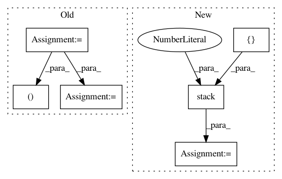

40d61ff1930843bd099b23a214bfadad4b9bb5b1,geomstats/geometry/hypersphere.py,Hypersphere,spherical_to_extrinsic,#Hypersphere#Any#,159
Before Change
theta = point_spherical[:, 0]
phi = point_spherical[:, 1]
point_extrinsic = gs.zeros(
(point_spherical.shape[0], self.dim + 1))
point_extrinsic[:, 0] = gs.sin(theta) * gs.cos(phi)
point_extrinsic[:, 1] = gs.sin(theta) * gs.sin(phi)
point_extrinsic[:, 2] = gs.cos(theta)
if not gs.all(self.belongs(point_extrinsic)):
raise ValueError("Points do not belong to the manifold.")
After Change
theta = point_spherical[:, 0]
phi = point_spherical[:, 1]
point_extrinsic = gs.stack(
[gs.sin(theta) * gs.cos(phi),
gs.sin(theta) * gs.sin(phi),
gs.cos(theta)],
axis=1)
if not gs.all(self.belongs(point_extrinsic)):
raise ValueError("Points do not belong to the manifold.")
return point_extrinsic
In pattern: SUPERPATTERN
Frequency: 5
Non-data size: 6
Instances
Project Name: geomstats/geomstats
Commit Name: 40d61ff1930843bd099b23a214bfadad4b9bb5b1
Time: 2020-04-23
Author: ninamio78@gmail.com
File Name: geomstats/geometry/hypersphere.py
Class Name: Hypersphere
Method Name: spherical_to_extrinsic
Project Name: tensorflow/models
Commit Name: baacb20d15066935e4a23c09b1c1a6843331172f
Time: 2020-10-02
Author: gardener@tensorflow.org
File Name: research/object_detection/meta_architectures/center_net_meta_arch.py
Class Name:
Method Name: regressed_keypoints_at_object_centers
Project Name: leftthomas/SRGAN
Commit Name: 549718ec73f84bd54a8fcfab18939f47dbb8c55b
Time: 2017-12-05
Author: leftthomas@qq.com
File Name: train.py
Class Name:
Method Name:
Project Name: tensorflow/models
Commit Name: baacb20d15066935e4a23c09b1c1a6843331172f
Time: 2020-10-02
Author: gardener@tensorflow.org
File Name: research/object_detection/meta_architectures/center_net_meta_arch.py
Class Name:
Method Name: prediction_tensors_to_temporal_offsets
Project Name: geomstats/geomstats
Commit Name: 829bd239ce27aefd9ce6656a7d1e0570ccd28266
Time: 2020-04-20
Author: ninamio78@gmail.com
File Name: geomstats/geometry/symmetric_matrices.py
Class Name: SymmetricMatrices
Method Name: vector_from_symmetric_matrix